Le niveau 1 décortiqué
Le document de conception (« GDD ») qu'on aurait aimé avoir : tout ce que le playthrough montre de 0:00 à 14:37, horodaté et illustré. Les tomes suivants s'y réfèrent en permanence.
La frise du niveau
| Début | Séquence | Points clés |
|---|---|---|
| 0:00 | Logos et cinématique d'intro | SEGA, copyright, fourgon de police, façade en perspective, Batman & Robin sur le dôme, évasion d'Arkham déclenchée par une main gelée (Mr. Freeze), logo Clockwork Tortoise |
| 1:25 | Titre → menu → options → sélection du personnage | START / OPTIONS ; CREDITS · MUSIC TEST · SOUND TEST ; PLAYER SELECT Batman / Robin |
| 1:39 | Batmobile puis carte-titre | « LEVEL ONE — HAPPY BIRTHDAY TO ME! » |
| 1:46 | Section 1 : rue de Gotham | Façade à balcon praticable, clowns, arène → GO! |
| 2:44 | Explosion de la Bank of Gotham City | Flash blanc de 3 s, la palette passe du bleu nuit au violet/ocre, flammes géantes, débris en pluie |
| 4:46 | Boss 1 : machine d'Harley | 3 phases, vitalité 99 → 00, +5 000 points, pose de victoire |
| 6:23 | Section 2 : Gem Expo | Colonnes de marbre au premier plan, têtes à hélice en formation |
| 9:09 | Entrepôt de caisses | Pyramides de caisses, Harley passe en fauteuil-fusée (9:25) |
| 9:48 | Mini-boss : Harley + grappin de grue | Grappin en sphères (secret #3 de Burton), +5 000 points |
| 10:44 | Section 3 : convoi de camions | Défilement continu, sauts entre véhicules, ballons-mines, cadeaux |
| 13:04 | Boss : montgolfière du Joker | Approche et éloignement par mise à l'échelle, grappes de bombes, +10 000 points |
| 14:37 | Batmobile | Transition vers le niveau 2 |
Le jeu n'affiche aucun écran de titre entre les sections : on passe d'une section à l'autre par un simple fondu au noir (6:22, 9:08, 10:44). Les noms « 1-1, 1-2, 1-3 » des anciennes docs n'existent pas à l'écran. Ce guide parle de sections.
Avant de jouer : intro et menus
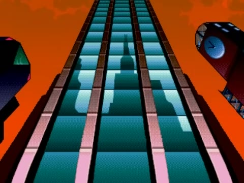
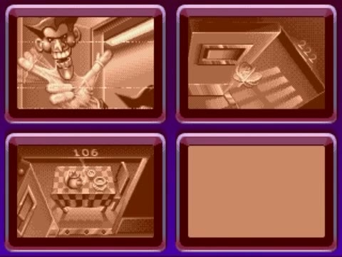
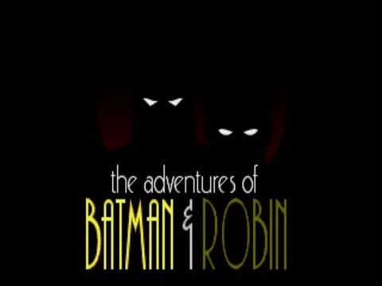
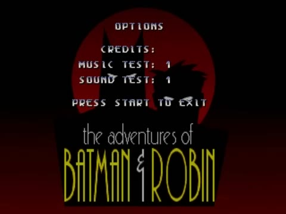
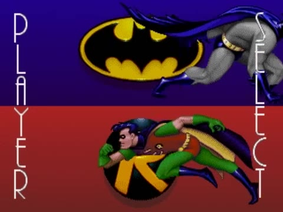
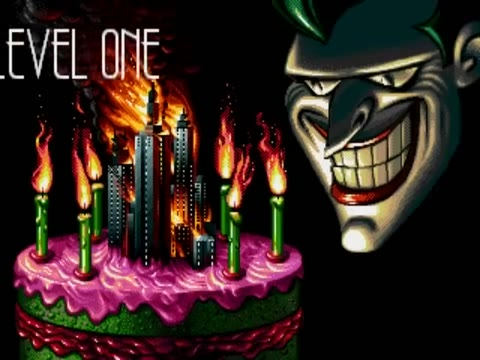
Le détail de chaque écran et leur implémentation se trouvent au tome 10.
Le HUD

| Élément | Position | Rôle constaté |
|---|---|---|
| Tête de Batman (ou de Robin) | haut gauche | Portrait du joueur 1 |
| Médaillon rond avec un chiffre | à droite du portrait | Le chiffre = vies (2 au départ, puis 3 à 7:16 et 4 à 8:20). L'anneau orange segmenté autour = santé ; il perd des segments à chaque coup. |
| Score | haut | Sans zéros devant (« 60 », « 17670 ») |
| Barre horizontale | sous le score | Jauge de charge : se remplit seule en environ 1 s quand on ne tire pas et se vide au tir chargé. Sa couleur suit l'arme équipée. |
| Pastille « 99 » | haut centre, combats de boss uniquement | Vitalité du boss, de 99 à 00 |
| Zone joueur 2 | haut droite | Alterne « PRESS START » / « CREDIT 06 » / « GAME OVER » à peu près chaque seconde. Pendant un boss : « BOSS TIME » / « PLEASE WAIT » (impossible de rejoindre). |
Section 1 : la rue et la banque en feu

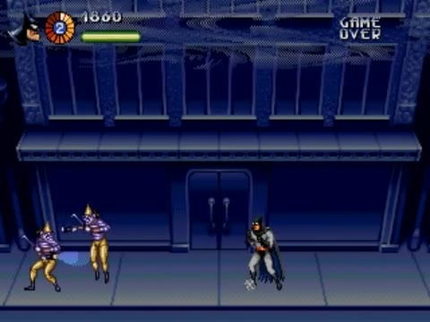


- Deux niveaux de jeu : le trottoir et le balcon, qui court sur toute la façade. Les ennemis sautent du balcon. Batman peut s'accrocher dessous, puis grimper ou tirer depuis cette position.
- Rythme : la caméra se bloque, des vagues tombent du haut ou arrivent par les côtés. Une fois l'écran nettoyé, une bulle « GO! » apparaît à droite (2:25, 3:18, 3:37, 4:42) et la caméra repart.
- Événement scripté : à 2:44, explosions en chaîne à l'étage de la banque, flash blanc d'environ 3 s, puis toute la palette du décor bascule vers une ambiance d'incendie. Les foyers sont animés et des débris (papiers, billets) tombent en continu.
- Décor destructible : les poubelles explosent et lâchent des bonus, les vitrines se brisent et les trous restent affichés.
Boss 1 : la machine d'Harley Quinn

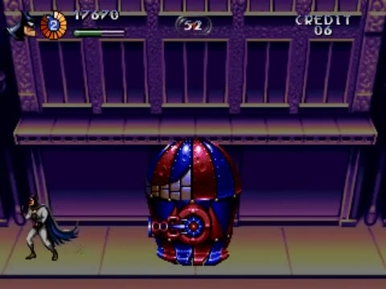
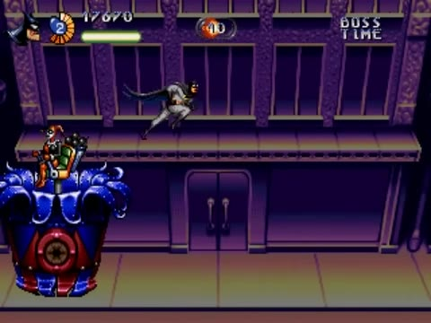
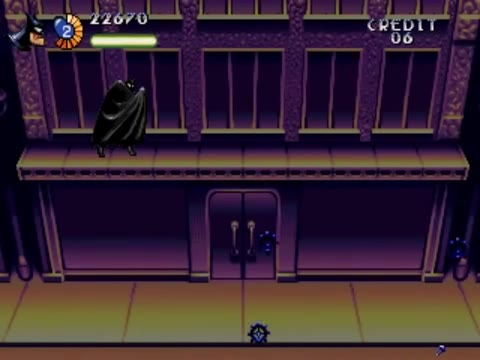
| Phase | Période | Comportement |
|---|---|---|
| A · machine complète | 4:46–5:20 | Glisse de gauche à droite sur toute la largeur. Le canon tourne (horizontal, diagonale haute, vertical) et tire des salves de 3–4 boules en arc qui rebondissent au sol. Flash blanc quand il est touché. |
| B · capsule | 5:20–5:58 | Le socle explose et éjecte 4 bombes orange en couronne. La capsule continue de glisser, le canon fait des tours complets. |
| C · Harley exposée | 5:58–6:16 | Le dôme explose en gerbe. Il reste une couronne bleue en pétales d'où sort un mât télescopique. Harley, assise dans un fauteuil au sommet, lance des bombes clignotantes et monte jusqu'au niveau du balcon. |
| Fin | 6:16 | Vitalité à 00, anneau d'explosions plein écran, +5 000 points, pose de victoire, fondu au noir. |
Section 2 : Gem Expo, entrepôt et mini-boss


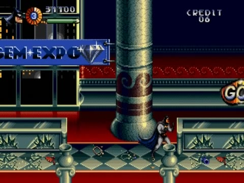
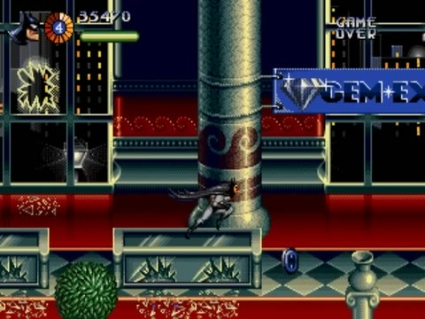

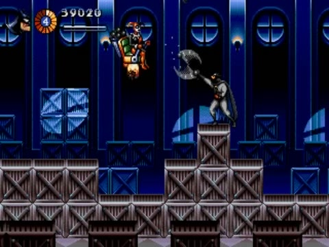
- Premier plan : les colonnes de marbre défilent plus vite que l'action et la masquent en partie. C'est une couche de parallaxe devant le joueur.
- Décor en boucle : la même salle (colonnes, bannière, vitrines) revient plusieurs fois. Le niveau est construit avec des modules répétés.
- Têtes à hélice : petits drones-jouets en tête de clown qui arrivent en file indienne (colonne verticale), puis s'alignent en haut de l'écran et lâchent des haches ou des bombes.
- Entrepôt : le sol monte et descend au gré des pyramides de caisses. Au fond, des verrières et des piles de caisses bleues.
Mini-boss : Harley et le grappin de grue


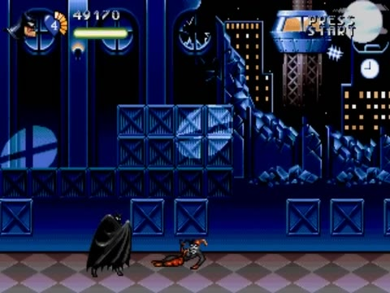
- Le grappin descend, frappe le sol (gerbe de débris), remonte, se déplace latéralement et passe en profondeur : il devient alors plus petit et plus sombre. C'est le secret #3 de Burton.
- Harley vole dans la moitié haute, monte et descend, tire de petits projectiles et lâche des bombes. Il faut la viser en diagonale haute.
- Vitalité 99 → 00 en une vingtaine de secondes de tirs nourris. +5 000 points, Harley tombe en vrille, explosion, pose de victoire.
Section 3 : le convoi et le Joker

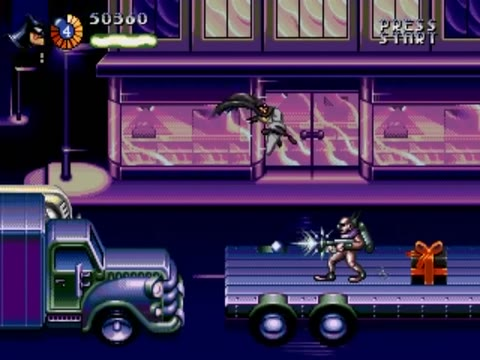

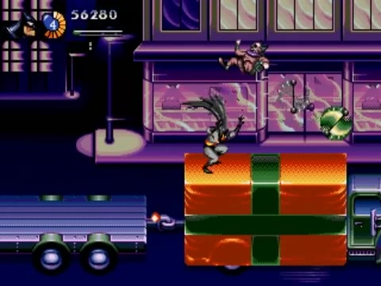
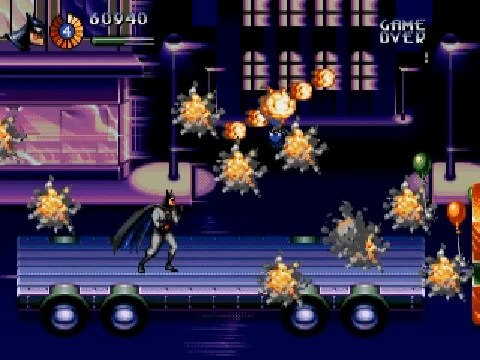
- Défilement : le décor (vitrines roses, réverbères et leur halo) défile en permanence. Les véhicules se suivent : plateau à caisses, fourgon violet, plateau nu, voiture de police, puis la séquence se répète.
- Plateformes mobiles : les écarts entre véhicules varient. Il faut sauter de l'un à l'autre, et les piles de caisses forment des marches.
- Deux vagues de ballons-mines montent depuis le bas et la droite en oscillant (11:10, 12:04).
Boss : la montgolfière du Joker
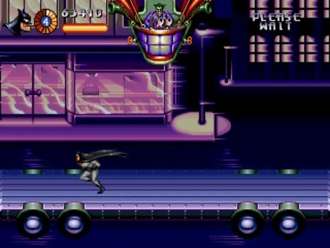

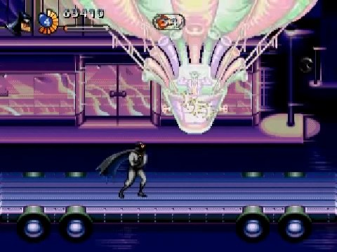
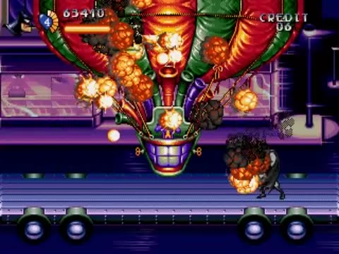

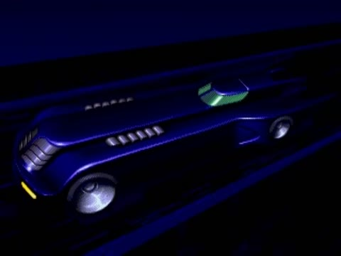
- Arène : un plateau de camion vide, le seul sol. Le décor continue de défiler derrière.
- Cycle : la montgolfière entre par un bord, petite et haute (au loin), puis grossit en descendant vers Batman (elle approche), traverse et sort par l'autre bord. L'écran reste vide quelques secondes (13:59–14:04), puis elle revient.
- Attaques : grappes de petites bombes noires lâchées en ligne ou en colonne, qui rebondissent sur le plateau. D'autres sources mentionnent aussi des rebonds au sol et des charges horizontales du ballon ; elles ne sont pas visibles dans cette partie.
- Lecture des dégâts : flash pastel de tout le ballon (13:08, 13:29, 13:38, 13:51, 14:06). La vitalité descend surtout quand le ballon est grand, donc proche.
- Mort : 5 secondes d'explosions en chaîne, le Joker éjecté retombe sur le plateau, +10 000 points, pose de victoire, fondu, Batmobile.
Bestiaire
| Ennemi | Première apparition | Comportement observé |
|---|---|---|
| Clown rayé (bonnet d'arlequin) | 1:52 | Arrive par les côtés ou saute du balcon ; frappe au corps-à-corps avec un aiguillon qui laisse une traînée bleue ; lance parfois de petits projectiles |
| Tireur (veste verte, arme longue) | 2:27 | Saute, se poste, tire à l'horizontale |
| Sbire rose (crâne rasé) armé | 2:36 | Rafales de boules orange ou bleues, lance-flammes depuis le balcon |
| Costaud au sac | 2:51 | Charge et empoigne Batman au corps-à-corps |
| Acrobate maigre vert et violet | 4:06 | Lance des projectiles en arc |
| Tête de clown à hélice | 6:52 | Vole en formation (file indienne, puis ligne) et lâche hache ou bombe |
| Sbire vert au sac | 7:42 | Saute, frappe |
| Ballon-mine | 11:10 | Monte en oscillant ; explose au contact ou quand on le touche |
| Diable en boîte (cadeau géant) | 11:42 | Un sbire jaillit d'un paquet géant |
Objets et bonus
| Objet | Aspect | Effet | Source |
|---|---|---|---|
| Bonus d'arme | Disque au logo chauve-souris qui change de couleur environ chaque seconde : rouge/orange → bleu → vert | La couleur au moment du ramassage donne l'arme : rouge = batarang, vert = bolas, bleu = shuriken. Même couleur que l'arme en main : niveau +1, jusqu'à 7. | Vidéo 1:48 12:30 + TASVideos |
| Crâne | Crâne qui roule au sol vers le joueur | Smart bomb : flash blanc, tous les ennemis à l'écran détruits | Vidéo 2:06 + TASVideos |
| Bonus de charge | — | Remplit instantanément la jauge de charge | TASVideos (pas identifié à l'écran) |
| Emblème chauve-souris (ovale) | Flotte en l'air | Probablement une vie supplémentaire (les vies augmentent vers 7:16) | À confirmer |
| Cadeau à ruban | Petit paquet rouge et vert | Conteneur à bonus | Vidéo 10:45 |
| Poubelles | Décor | Destructibles, lâchent des bonus | Vidéo 1:48 |
Ce que fait Batman
- Course à environ 2 px par image (voir mesures), arrêt sec.
- Saut ; attaque aérienne tournoyante, cape en éventail (2:06, 6:04).
- Accroupi pour esquiver les salves du boss 1 (5:07).
- Tir dans 8 directions : diagonale haute vers le balcon et vers les boss aériens, verticale contre la montgolfière.
- Attaque contextuelle : coups de poing et de pied au contact, projectile à distance (même bouton).
- Suspension sous le rebord du balcon (3:30).
- Empoigné par les costauds (2:51).
- Pose de victoire après chaque boss.
Mesures prises dans la vidéo
Sur une course continue dans la rue vide juste avant le boss 1 (4:42–4:46), j'ai extrait les images à 60 i/s en résolution native 320×224, puis mesuré par corrélation le décalage horizontal de chaque bande de 10 lignes sur 12 images :
| Lignes de l'écran | Contenu | Défilement |
|---|---|---|
| 20–30 | HUD | 0 (fixe) |
| 32–114 | Façade haute, balcon | 2,00–2,08 px/image |
| 116–162 | Dessous du balcon | 1,92 → 1,83 px/image |
| 164–174 | Vitrine en retrait | 1,75 px/image |
| 200–222 | Trottoir | 1,92 px/image |
Toutes les bandes ne défilent pas à la même vitesse : la vitrine en retrait est plus « loin » que la façade du balcon. C'est exactement le secret #1 de Burton. Chaque ligne a sa propre vitesse, et c'est ce qui donne du relief à une image plate. On reproduit cette table de vitesses au tome 06.
- Vitesse de course ≈ vitesse de caméra en régime établi ≈ 1,9–2,0 px/image ≈ 115–120 px/s.
- Caméra : à l'accélération, le décalage monte progressivement (6 → 18 → 30 px par 12 images) avant de se stabiliser ; à l'arrêt, il décroît en douceur (18, 9, 4, 2). La caméra est donc lissée et en avance sur le joueur, pas collée à lui.
- Jauge de charge : vide à pleine en environ 1,1 s (1:46.5 → 1:47.6).
- Bonus d'arme : change de couleur environ une fois par seconde.
- Score : boss 1 et mini-boss = +5 000, Joker = +10 000. Score en fin de niveau dans cette partie : 73 410.
Ce que la vidéo ne permet pas de trancher
- Hauteur exacte du saut, existence d'un saut à hauteur variable ou d'un double saut.
- Nombre exact de segments de santé (environ 8 à 10 visibles), dégâts de chaque ennemi.
- Effet exact des niveaux 1 à 7 de chaque arme (nombre de projectiles, cadence).
- Ce qui se passe quand on ramasse une couleur différente : retour au niveau 1, ou niveau conservé ?
- Origine des vies supplémentaires : palier de score ou objet ?
- Boutons exacts. Le manuel cite A ou C pour l'attaque contextuelle ; le saut est probablement sur B.
Le code de ce guide expose toutes ces valeurs en @export, avec des valeurs par défaut raisonnables.